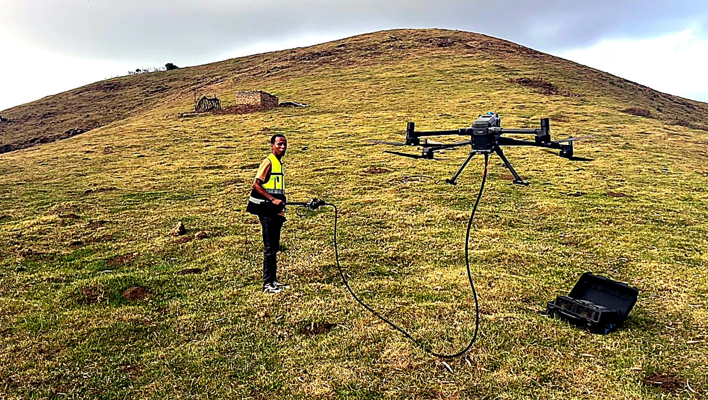
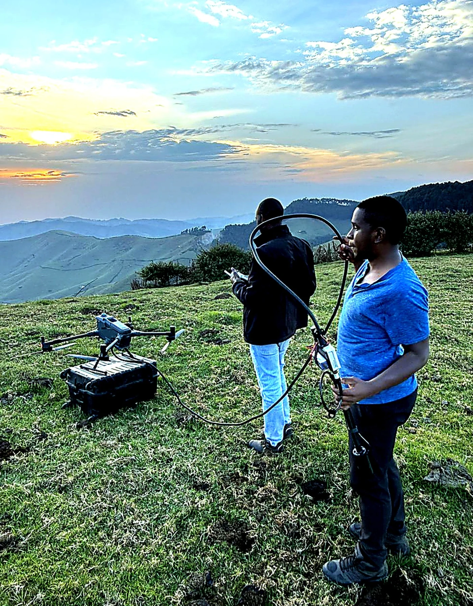
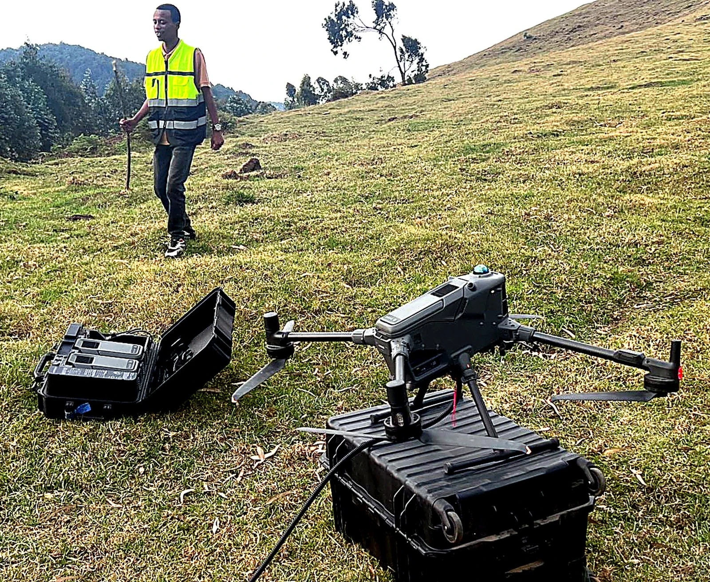

Project note 01 · Kabaya, Rwanda
Control starts
before take-off.
A two-day aerial magnetic deployment across two survey areas, built around a traceable instrument and flight record.

At Kabaya, GeoResolve supported a two-day aerial magnetic operation using an RTK-capable UAV platform, a qualified pilot and the AeroSmartMag field system. Mission controls included operational permissions, payload preparation, launch-area management and sensor separation.
The archive retains raw magnetic files together with the flight-track record. Recorded fields include UTC time, latitude, longitude, altitude, projected position and navigation accuracy; the survey record identifies ASM sensor serial 103D1.
Those details preserve the evidence chain required to distinguish a ground response from avoidable aircraft noise, unstable sensor geometry or an inconsistent flight path.

